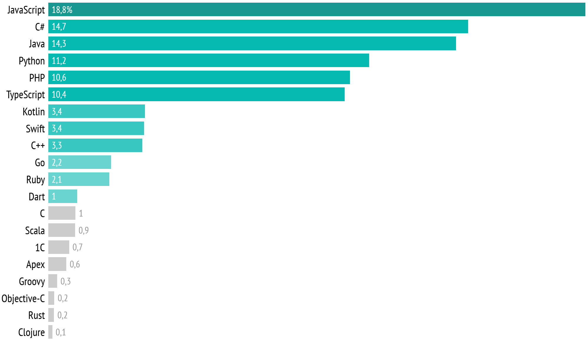
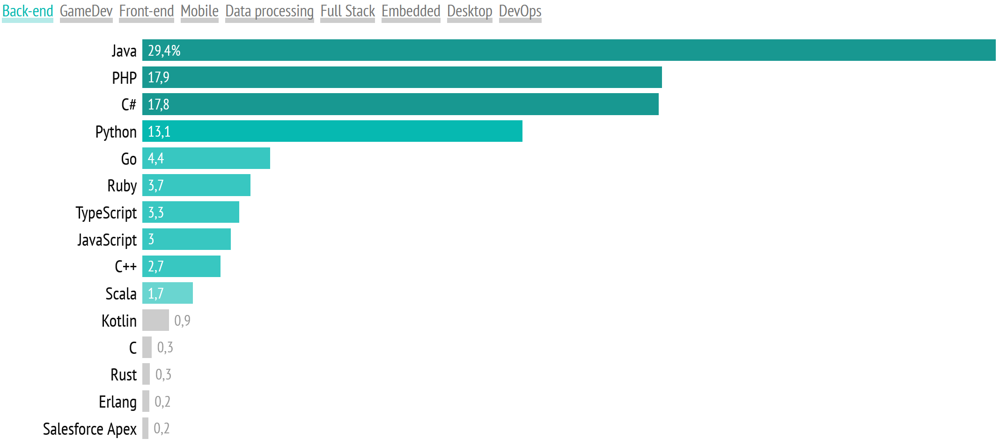
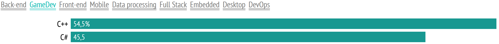
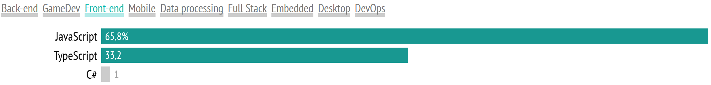
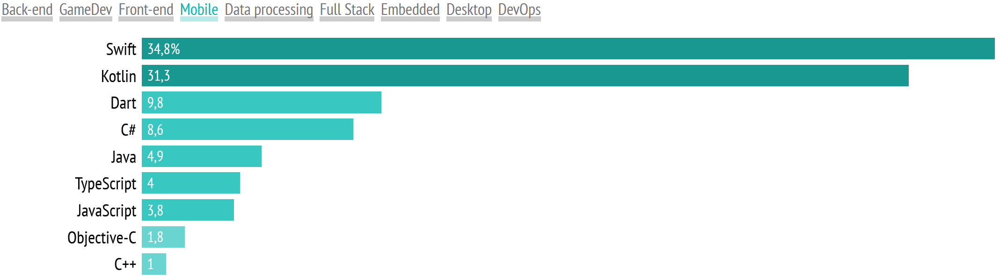
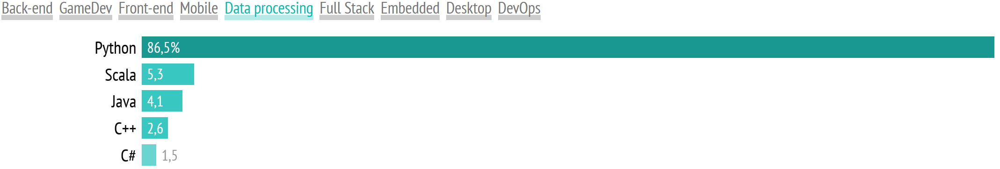
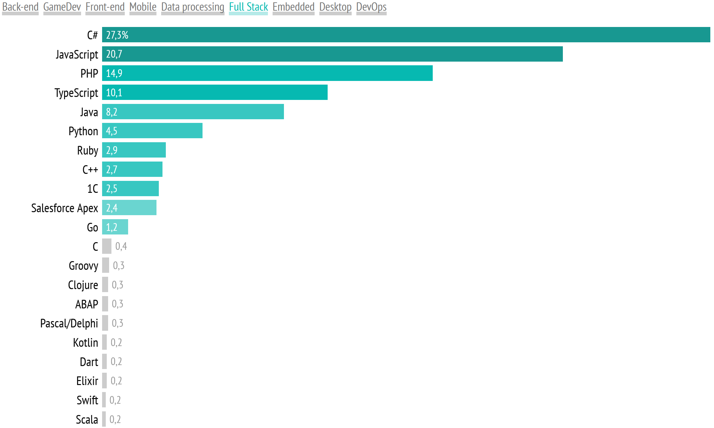
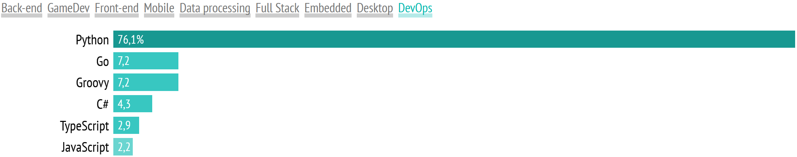

ТОП 3 популярных языков программирования в 2022г
- Коммерческое использование
Самым популярным языком среди украинских разработчиков остается JavaScript - 18,8%.
На втором месте C# у него второй год подряд положительная динамика.
Можно предположить, что это благодаря активному росту геймдев-индустрии.
Python уже второй год подряд демонстрирует негативную динамику.
Java тоже теряет позиции – в этом году она на третьем месте по популярности.
- Какой язык используете для работы сейчас

В общем, популярность большинства языков в этом году выросла.
Нехорошая динамика, не считая Java и Python, есть еще только у Ruby, C, Scala, Clojure и C++.
Последний, кстати, продолжает стремительно терять популярность.
Не в последнюю очередь из-за снижения доли среди новичков.
- Сферы использования
Если смотреть по отрасли применения, то ситуация другая:
в бэкенд-программировании Java все еще доминирует,
C# на третьем месте после PHP, а доля TypeScript и JavaScript не так уж велика,
C# — также является популярным языком в геймдеве.
-Back-end-







На фронтенде TypeScript продолжает «откусывать» часть у JavaScript,
но довольно медленно. Что касается обработки данных,
то мы видим, что Python становится стандартом де-факто.